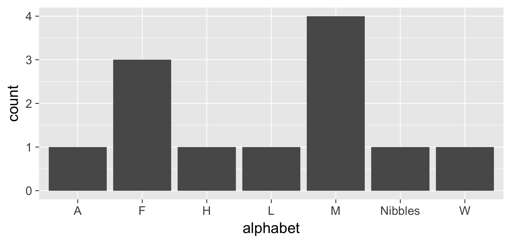

5 More on Factors
5.1 More on manipulating factors
The following section is optional. Intermediate users may find these helpful. You should probably go on to Part 3 and learn some dplyr basics before starting with these, since we use mutate(), and it’s important to understand what it’s doing.
You’ll need to load the forcats package to use these. It’s included with the tidyverse, but is not loaded by default.
library(tidyverse)
library(forcats)
#load the pets data again
load("data/pets.rda")5.2 Let’s build a bar plot of weights
To start out, let’s plot the weight for each pet as a bar graph.
ggplot(data = pets, aes(x = id, y = weight)) + geom_bar(stat = "identity")
5.3 Sort by another variable (intermediate)
Let’s sort the barplot by weight. We can do this by adding a fct_reorder() expression to define a new variable id2 whose categories are ordered by weight.
Based on this visualization, what can we conclude about the weights of each type of animal? Which kind of animal weighs the most?
pets %>% mutate(id = fct_reorder(id, weight)) %>%
ggplot(aes(x = id, y = weight)) +
geom_bar(stat = "identity") 
5.4 Plot in Reverse Alphabetical Order
Often, you want to plot things in reverse alphametical order. This is useful because heatmaps and such are often plotted from the bottom.
You can use fct_rev to do this.
library(forcats)
pets %>% mutate(id = fct_rev(id)) %>%
ggplot(aes(x = id, y = weight)) +
geom_bar(stat = "identity")
5.5 Sort by frequency
Going back to our pets data, sometimes we want to sort our count data by frequency. We can use fct_infreq() to do that.
How would we plot these in ascending order?
pets %>% mutate(name = fct_infreq(name)) %>%
ggplot(aes(x = name)) + geom_bar()
5.6 Recode levels of a factor
Sometimes we want to rename the levels of a factor. Often the data may have obscure categories (such as abbreviations), and we want to be clear in our visualization.
As a silly example, let’s change the names of the levels to the latin genus names for each animal. Note we didn’t change the name of gerbil. What is the result?
pets %>% mutate(genus = fct_recode(animal, canis = "dog", felis = "cat")) %>%
ggplot(aes(x = genus)) + geom_bar()
5.7 Group levels of a factor together
Sometimes, your categories are too granular. It might make sense to aggregate some categories together. You can use fct_collapse() to do this.
pets %>% mutate(alphabet = fct_collapse(name,
A = c("Apples"),
F = c("Fido"),
M = c("Morris", "Mr Bowser"),
L = c("Lady Sheba"),
H = c("Hubert"),
W = c("Winky"))
) %>%
ggplot(aes(x = alphabet)) + geom_bar()
5.7.1 forcats does way more!
Reference page: http://forcats.tidyverse.org/